GMC Software (currently Quadient) is a leader in the market of Customer Communications Management (CCM) and offers various organizations solutions to create better experiences for their customers with helping them create optimized, contextually personalized and effective communications for all possible channels (mobile, digital, social media, and print technologies).
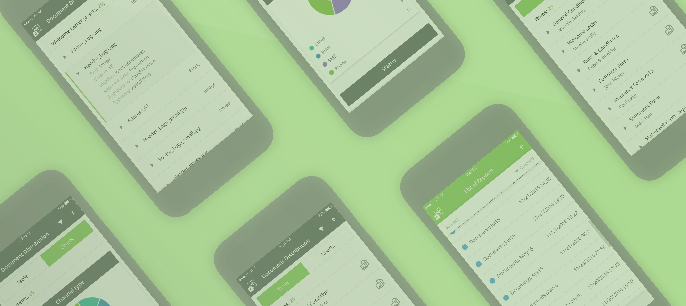
Following my non-disclosure agreement, I did not include confidential information or somehow changed its actual meaning. Moreover, the information in this article is fully my own and does not reflect the views of Quadient in any way.
My role
The company put a big emphasis on the user-centered approach to the development of all products and users’ feedback was an important part of the development cycle. As a member of the UX team, I was initially responsible for the design of Inspire Control web application; the first version had been developed from June to October 2015. In November, the product was successfully released for internal purposes and I stopped working on this project before the next versions were scheduled in 2016.
I worked with a really diverse team, discussing the project scope with product managers, consulting with other designers in various directions, finalizing the look of the products with visual designers, and creating specs and delivering them to developers. Moreover, I was also responsible for the usability testing, as well as reviewing general usability standards in the company (the application of new testing approaches and metrics, such as
Keystroke Level Modelling) and techniques (conduction of eye-tracking testing sessions and others).
The challenge
The main motivation and goal of the Inspire Control project was to create an effective tool for tracking produced documents (and their atomic assets) created within different communication channels, such as print, e-mail, and many more. This tool should have enabled relevant people (such as print specialists in print service companies) to easily review and analyze pre-selected reports, which would give them an overview over the communication production and help them with better process management.
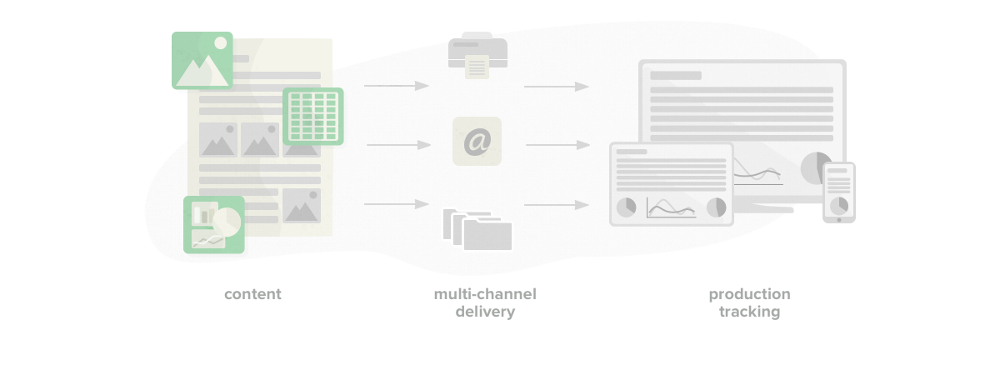
The application should have easily answered basic questions, such as: what is the number of produced documents in a certain period, which channels were used for this production, or who participated in their production? Using these reports would have also, for example, helped determine the documents in which a detected error occurred and to whom these incorrect documents were sent.
The secondary objective of the project was to test Dynamic Communications (a wysywig technology newly developed in the company, targeted on less technically skilled users), which was used for all final reports implementation. An integral part of the design process was, not only for this reason, very frequent discussions with developers with many iterations, testing different approaches and limitations of the technology.
Design process
User-centered approach was generally applied in GMC Software and the same conception was also used in this project, so we put an extensive attraction to users and their needs. I was tasked by the product manager to create this application to help a specific group of users who were both business and technically oriented and needed to have quick insights in what the efficiency of the documents’ production is and to have a good overview of the ongoing production processes.
Based on the motivation and business goals, I analyzed the target group and modelled our personas. During the whole development, we frequently used some of the internal people as our users, as they were very similar to our defined personas. During the project, most of the outcomes were iteratively tested with these people and, thus, the design ideas could be easily evolved.
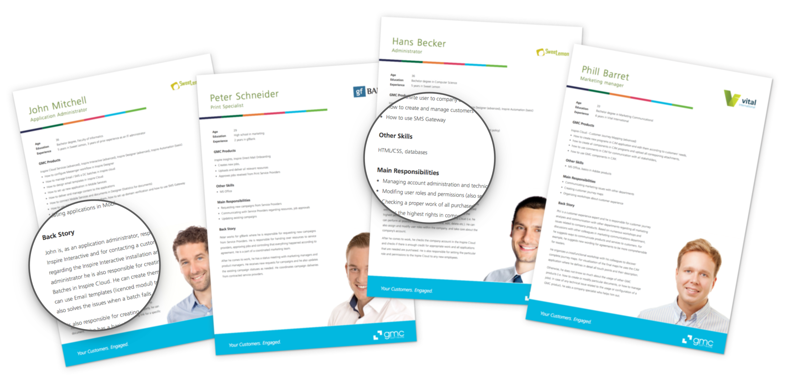
A structure of relevant personas based on the initial research was used.
In the first step, we had a brief kick-off with all stakeholders where the scope of the application was defined - this was a list of all required content that came up from discussions with users and the analysis of their needs. (Unfortunately, I had a limited chance to talk to these people in person, so my research was mostly based on the information gained from product managers or colleagues from the professional service department who has a very similar level of expertise).
Based on this problem description and with personas in my mind, I started with a more detailed conceptual framework and setting up corresponding user scenarios to better understand relevant user flows. These scenarios were subsequently discussed with the product manager and also validated with other stakeholders.
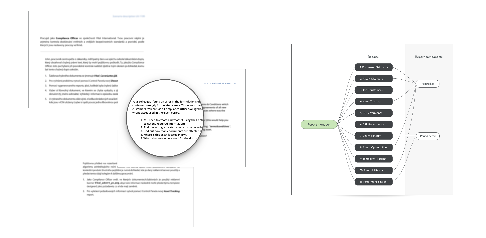
Various user scenarios were specified in the early phase of the project (and used also for the final usability testing). A structure map of the app and its content (with 11 report types) was specified. Some details are intentionally blurred.
One of the requirements (and a constraint at the same time) of the application, based on both the previous research and set technological limitations, was the fact that the application would be frequently approached from various devices (mobile and desktop) so the designed layout must follow a mobile-first approach (smartphones were identified as the most important devices).
From paper to pixels
The first design phase was about sketching several possible options and modelling user flows through the application. I analyzed and wrote down all required functionalities and brainstormed relevant solutions and ideas. This kind of early exploration helped me understand the complexity of the project greatly, and acknowledge important moments and their constraints. This step was also very important for the future consistency of the whole application.
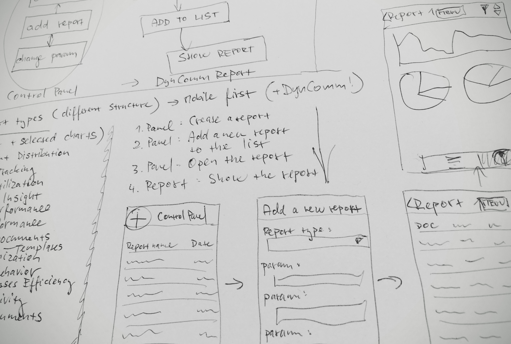
Early explorations of user flows and possible directions of the app’s design
Based on the realized explorations, I started with creating initial wireframes which were presented to other stakeholders (and a few users looked at them in a moderated interview), and we decided the right direction to go with in the next development.
The structure of all reports followed the same design idea. The main part of the application is a report manager which allows a user creating (or removing) and opening individual reports. The reports have similar structure; users are able to look at the available data through a table or chart view and sorting, as well as filtering functionality is also provided. Some of the reports also contain a second level of data which provide a detailed view on particular items (i. e., “items of an item”). Generally, common interaction patterns were used for handling the application (also corresponding to some other company’s software that our users are already used to).
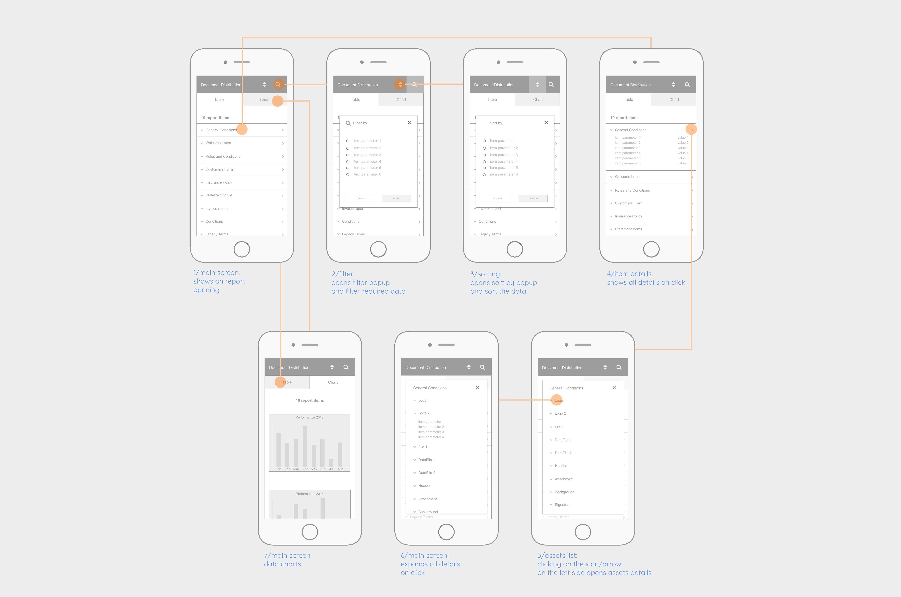
Wireframing of the first report type (Document distribution report). The whole conception was discussed and approved with my team.
From prototype to the final solution
During the next phase, I developed an interactive prototype (based on the wireframes above). I wanted to test the preliminary design solution, as the assumption was to apply the same interaction patterns for all reports through the whole application (the interactive prototype was made using the Marvel app and filled with real data). After finishing the prototype, a short guerilla usability test session on a smartphone was done together with relevant users (most of them were internal colleagues corresponding to the modelled persona).
This formative test showed crucial issues concerning some interaction patterns that were not fully understood by users. The final iteration of the design process was then finished with an emphasis on the test findings (however, some of the issues were caused by the relatively low fidelity of the prototype). After another design iteration, fixing most of the usability issues, I was approved to develop and finalize this conception as a high-fidelity mockup. The creation of a relatively simple interactive prototype was definitely an effective way to get valuable feedback on the design status.
Final designs (specifications finalized by my colleague) were eventually provided, together with the prototypes, to developers for their implementation and then we worked together on having them done (I continuously checked the parts that were done and gave developers quick feedback).
And here come the results..
The first release consisted of a total of 12 application parts (a report manager for reports creation and management and 11 different reports which used the same layout and their structure only slightly differed according to data used for individual reports). Designs for mobile and desktop versions were provided and implemented.
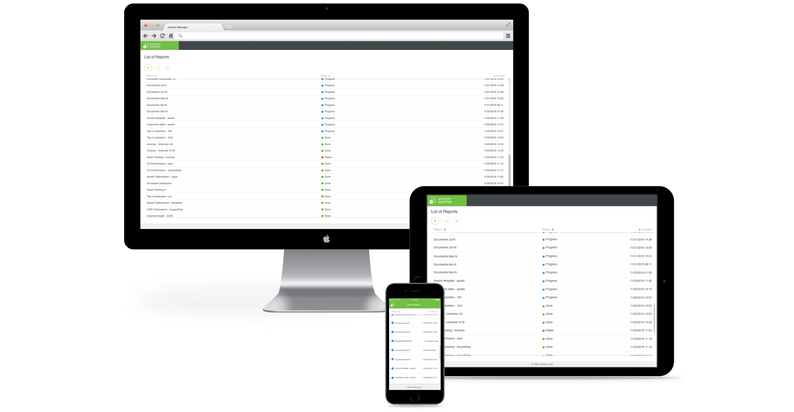
After the implementation of all of the parts was finalized, the summative usability test was eventually performed with the live app. For this final test, we used the same user scenarios defined in the beginning of the whole design process. The aim of this final test was the evaluation of the effectiveness and efficiency of this newly designed solution. Results of this test would be subsequently used in quality comparisons together with results of similar tests in future releases (and for their improvements, for sure).
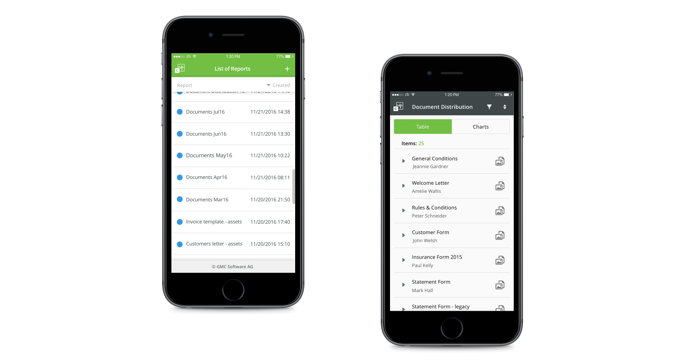
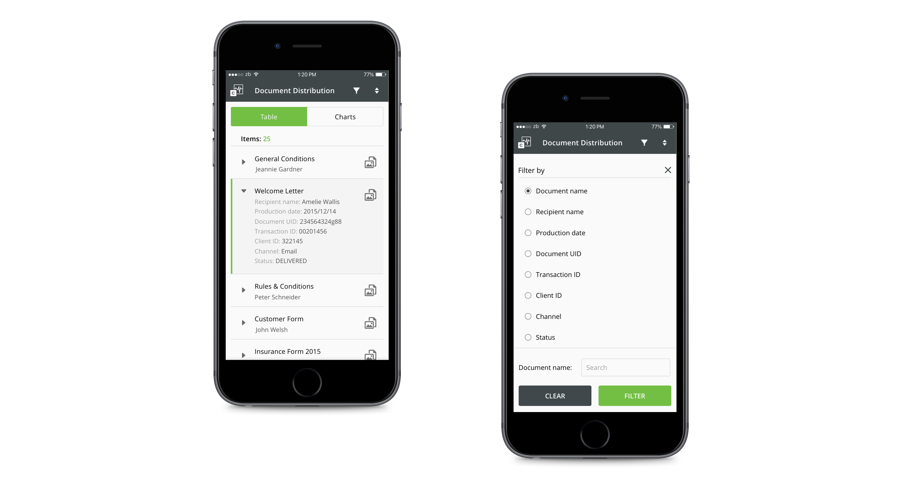
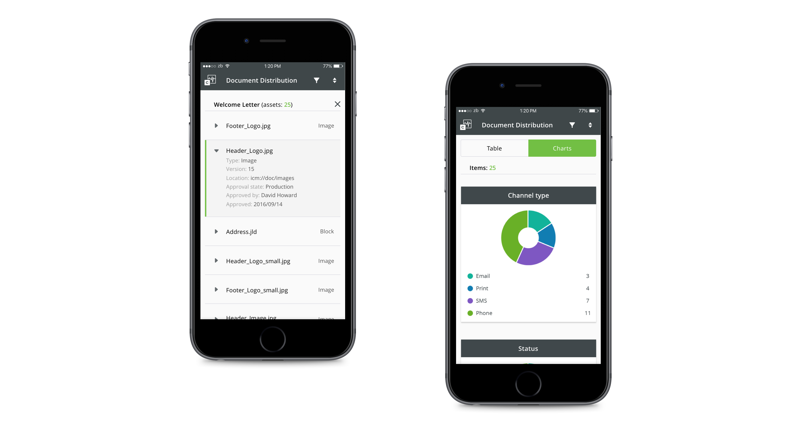
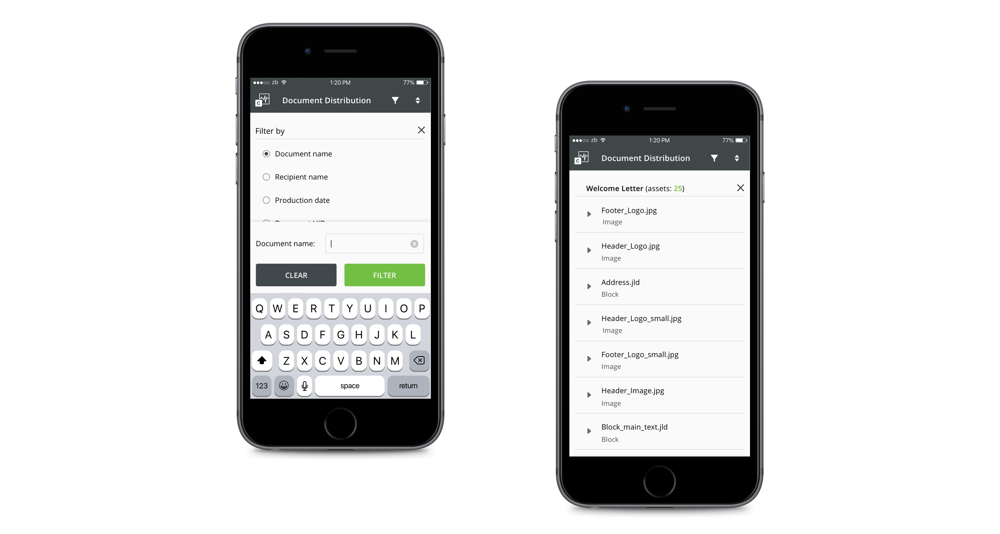
What I learned during this project?
This was exactly the project where user feedback and validation of the design ideas were so important. Our target group was a really specific group of users with very concrete skillsets and backgrounds, so the design had to follow these constraints. Fortunately, I could easily test my designs with this type of user (colleagues with the same skillset and working on similar positions) so validations of my work was quite flexible and frequent.
Finally, I again proved to myself that usability testing with interactive prototypes (even the low-fidelity ones) is a very useful way to get quick, valuable feedback. This definitely showed me where to go (and where not to go) with my designs.
← BACK TO PROJECTS